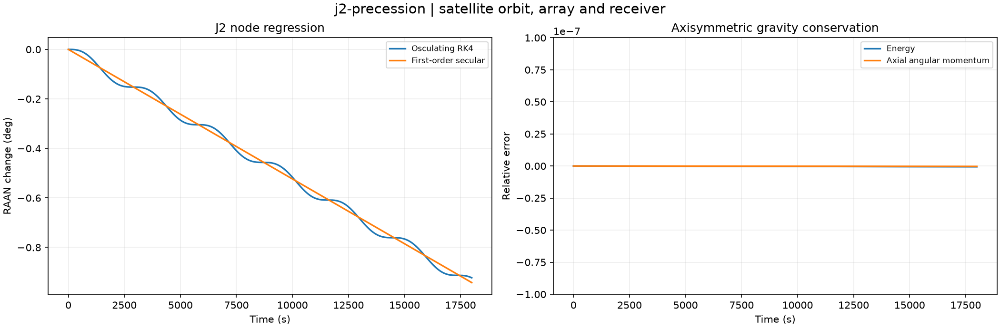

Reproducible satellite orbit, array and receiver. Units and field components are printed on the scientific axes. peak d-q quantities use exp(+i omega t); terminal currents point into the protected line.
Sealed numeric archive | Summary CSV | Physical parameters | Run request | Source and environment

| max_energy_relative | 6.312734305861921e-10 |
|---|---|
| max_hz_relative | 3.0999569368054737e-10 |
| measured_raan_rad_s | -9.206833322719574e-07 |
| secular_raan_rad_s | -9.135728245114195e-07 |
These are simulations, not hardware measurements. Network-model, measurement, timing and statistical uncertainty require distinct convergence checks. Singular or unilluminated data use explicit masks.
Source revision: 9a21824463bee585d4ba8354070cc9108436346d.
Dirty checkout: False.
Configuration SHA-256: dcaa950fd67914bca53e051e4a3c794b4b4df5f1e4b21e9f0025ae9ae7e28fc9.
Replay preserves original source and parameter provenance. SHA-256 manifests detect changed bytes; they are unsigned integrity records, not certificates of physical validity.